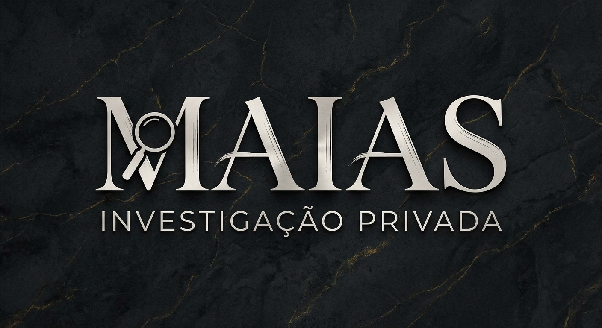

Inteligência aplicada à arte e ao patrimônio cultural para localização, rastreabilidade e verificação de legitimidade — com rigor técnico, legalidade e sigilo absoluto.
Fundada no Rio de Janeiro, a MAIAS Investigação Privada é referência nacional em investigação e rastreabilidade de obras de arte e bens culturais. Atuamos com metodologias alinhadas à Lei Federal nº 13.432/2017, combinando inteligência digital (OSINT), análise de proveniência, due diligence e investigação de campo.
Avaliação inicial de risco, documentação e viabilidade investigativa.
Análise de proveniência, cadeias de posse, bases públicas e privadas.
Atuação coordenada com autoridades e agentes nacionais e internacionais.
Dossiê investigativo auditável com preservação de prova e próximos passos.
Cadeia de custódia documental e digital, preservação de prova digital e uso de hashes criptográficos.
Conformidade estrita com a Lei nº 13.432/2017 e diretrizes éticas da investigação privada.
A MAIAS atua apenas dentro dos limites legais, técnicos e éticos, garantindo validade pericial e segurança jurídica.
Proteger o patrimônio cultural por meio da investigação ética, técnica e legal.
Ser referência latino-americana em inteligência aplicada ao mercado de arte.
Sigilo, legalidade, ética investigativa, rigor técnico e cooperação institucional.
Atuamos em parceria com a GIVOA Art Consulting, consultoria internacional referência em avaliação e perícia de obras de arte. A cooperação integra guidelines internacionais, metodologia pericial de ponta e ampla capacidade de atuação internacional para verificação de legitimidade.
Checklist Secreta de Autenticidade: como não ser enganado ao comprar uma obra de arte.